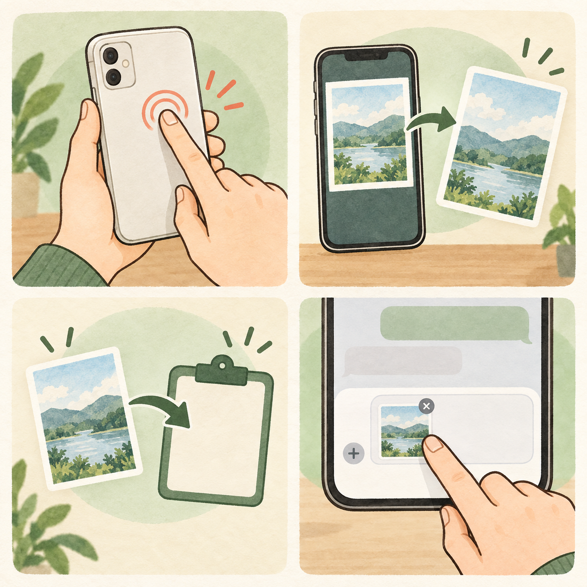

「画像を探して添付する」が、いらなくなる
英語のメッセージが出て「これ何？」と思ったけど、打ち直すのが面倒でそのまま閉じた。そんなとき、画面を見せてAIに聞けたら、疑問を後回しにしなくて済みます。
これまで
スクショを撮る → ChatGPTを開く → 画像を探す → 添付して質問
背面タップに設定したら
見せたい画面でトントン → ChatGPTに貼り付ける → 「これ何？」と質問
英語のメッセージが出たときも、設定の場所が分からないときも。画面を見せながら聞けます。
実際に使うときは

見せたい画面でトントン
背面を2回タップ。画面の撮影とコピーが一度に終わります。
ChatGPTを開く
いつものチャット画面へ移ります。
入力欄に貼り付ける
「ペースト」で、さっき見ていた画面の画像を付けます。
聞きたいことを送る
「この表示、どういう意味？」など、ひと言添えて質問。
自動で終わるのは、画面の撮影とコピーまで。どのチャットに貼るか、送るかどうかは自分で決められます。
気に入ったら、iPhoneに入れてみよう
① ショートカットを追加
上のボタンからAppleのiCloudページを開き、名前が「スクショコピー」であることを確認。「ショートカットを取得／追加」を押します。追加前に表示される動作も見てください。
② 背面タップに割り当て
設定 → アクセシビリティ → タッチ → 背面タップ → ダブルタップと進み、下の「ショートカット」欄から「スクショコピー」を選びます。
③ 試して貼り付け
見せてもよい画面で背面を2回タップ。メモなどに「ペースト」して、画像が入るか確認しましょう。AIに渡す場合は、貼り付ける画面に個人情報が写っていないか見てから送ります。
対応するiPhone
Appleの背面タップ案内はiPhone 8以降、iOS 14以降が対象です。機種や設定によって反応が違う場合は、トリプルタップにも割り当てられます。
Macの人はこちら
この配布ショートカットはマジAIの記事で「iPhoneのみ対応」と案内されています。Macでは標準のキー操作で同じように範囲を撮ってコピーできます。
Control ＋ Shift ＋ Command ＋ 4 → 範囲を選ぶ → 貼り付け先で Command ＋ V
Macのキー設定を変えている場合は、現在の割り当てを確認してください。
よくある「これってどうなる？」
Googleドライブからダウンロードするの？
いいえ。元のショートカットはマジAI公式記事からAppleのiCloud共有ページへつながっています。このHTMLは案内ページで、ショートカット本体の配布はAppleが担当します。
このHTMLを開くだけでインストールされる？
されません。リンク先で内容を確認し、受け手が「ショートカットを取得／追加」を押します。そのあと背面タップへの割り当ても必要です。
おけもん自身のショートカットリンクにもできる？
できます。自分のiPhoneのショートカットアプリへ取り込み、動作を確認してから複製し、そのコピーを「iCloudリンクをコピー」で共有します。そうすると自分のAppleアカウントで共有したリンクにできます。ただし、今このページのボタンが指すのはマジAIの元リンクです。
自分のMacにも勝手に入る？
他人のMacには入りません。自分の同じAppleアカウントで「ショートカット」のiCloud同期を有効にしている場合はコレクションが同期されます。ただし、背面タップはiPhone側で個別に設定し、Macの操作は上のキー操作を使います。
元情報と安全確認
このページはおけもんの案内文です。ショートカットの作者は本気AI（マジAI）。配布リンクを自分のサイトに案内として載せる形なら、元リンクと作者が分かり、ファイルをコピーして配り直さずに済みます。
配布されているショートカットの中身は「画面を撮影」「クリップボードにコピー」の2アクションでした。2026年10月12日に公開配布ファイルを読み取り、外部送信や写真への保存を行うアクションが含まれていないことを確認しています。
- マジAI公式記事「AIガチ勢が毎日やってる10の習慣」 — 第10位に配布リンクと背面タップの手順。
- Apple iCloud「スクショコピー」 — 実際の受け取り先。
- Apple「iPhoneで背面タップを使う」 — 対応機種と設定。
- Apple「ショートカットを共有する」 — 追加と自分のiCloudリンク作成。
- Apple「Macでスクリーンショットを撮影する」 — Macのキー操作。
- OpenAI「ChatGPT Image Inputs FAQ」 — コピーした画像をチャットに貼り付ける方法。
確認日：2026年10月12日。ショートカットの動作は公開されている配布ファイルから確認したもので、参加者それぞれの端末での実動作までは確認していません。